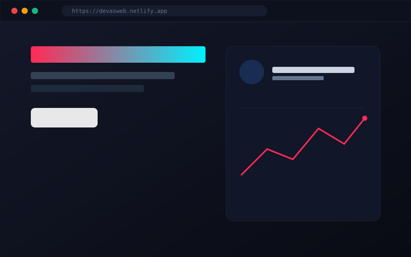

01 // DESTAQUE
🟢 Em Produção
Landing Pages & UI/UX
devasweb.netlify.app
Devas Web — Agência & Criação Digital
Plataforma institucional para criação de sites modernos, páginas de captura e experiências interativas voltadas para marcas e profissionais que buscam autoridade digital.
HTML5 Semântico
CSS Moderno
Netlify
Figma